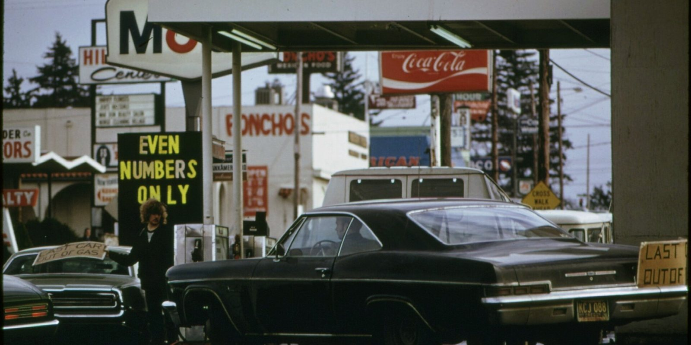
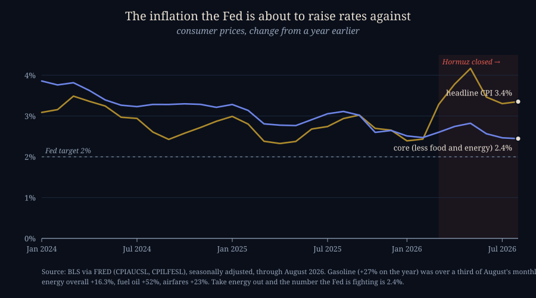
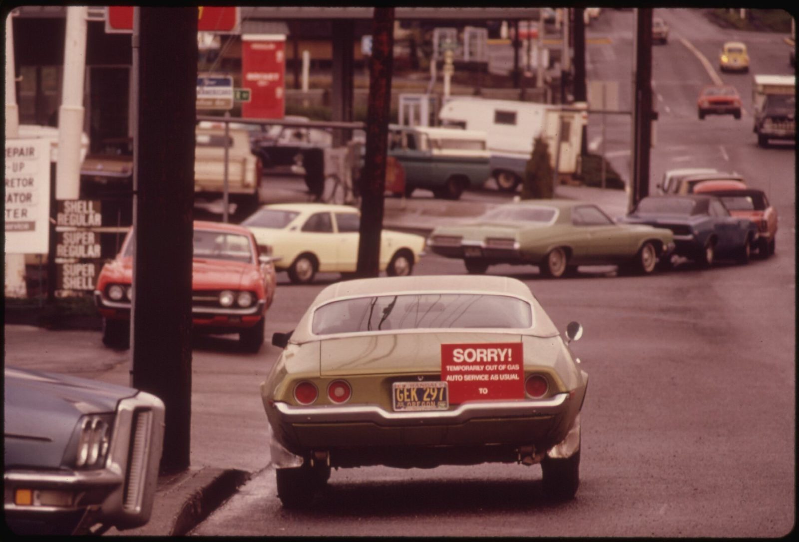
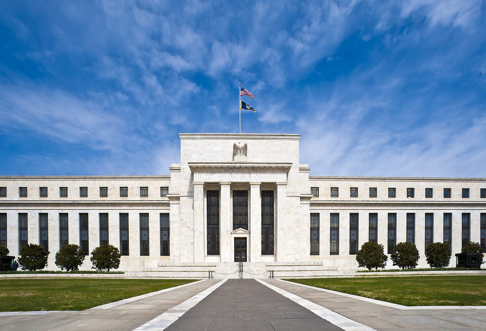

A Rate Hike Against a Strait
SEPTEMBER 12, 2026

Two numbers came out on Friday morning, and together they decide what happens next Wednesday. The first is the consumer price index for August: up 0.4 percent on the month and 3.4 percent on the year. The second is the number that came out of the futures market a few minutes later: better than 85 percent odds that the Federal Reserve raises its policy rate at its meeting on 15–16 September, from the 3.50–3.75 percent range where it has sat since spring. A week ago the odds were about 65 percent. Friday's report is what moved them.
Here is what is inside the 3.4. Gasoline rose 3.9 percent in August alone and is up 27.4 percent from a year ago; the Bureau of Labor Statistics says gasoline by itself was "over one third of the monthly all items increase." Energy as a whole is up 16.3 percent on the year, home heating oil 52 percent, airfares 23 percent. Food is up 2.7, shelter 3.0. And the number the Fed officially says it cares about most — "core" inflation, everything except food and energy — is 2.4 percent, down from 2.5 the month before, and the closest it has been to the 2 percent target in five years.

So the honest description of next week is this: the Fed is preparing to raise the price of money for every borrower in the United States against an inflation number that is, by the government's own arithmetic, about two-thirds a closed strait and one-third everything else. I've spent the last two days writing about that strait and the other one below it. This is the piece about what a central bank is supposed to do when the thing driving prices is a war it cannot reach.
Why the Textbook Says Don't
The textbook answer, which every Fed chair since Greenspan has recited at some point, is that a central bank should "look through" a supply shock. The reasoning is simple and, as far as it goes, correct. Raising interest rates works by making people borrow less and spend less, so that demand falls and prices stop rising. It does nothing whatsoever to the supply of oil. A higher federal funds rate will not reopen Hormuz, restart the East–West pipeline, or persuade the Houthis to leave Perim island. What it will do is take money out of the pockets of people who are already paying $4.30 a gallon — the national average on Friday — and were therefore already spending less on everything else. An oil shock is its own rate hike. It taxes consumption directly. Adding a second one on top is how you turn a price spike into a recession, which is the story of 1974 and of 1980.

And you can see the textbook being followed in the record. The chart below is the same exercise five times over: take the month an oil shock began, and follow the oil price and the Fed's rate for the next eighteen months.
![Five small panels, one per oil shock: 1973, 1979, 1990, 2022 and 2026. The top row shows the oil price change from the month the shock began over the following eighteen months: up 159 percent in 1973, up 166 percent by 1980, up 93 percent then back down in 1990, up 38 percent then down in 2022, and up 30 percent so far in 2026. The bottom row shows the change in the federal funds rate over the same months: up about three points then cut four and a half in 1973, up seven point six points by 1980, cut four points in 1990, up five points in 2022, and unchanged so far in 2026.](img/five-oil-shocks-and-the-fed.svg)
Read the bottom row. In 1990, when Iraq took Kuwait and oil nearly doubled, the Fed cut — four points over the following year and a half — because a recession had already begun and the oil shock was, correctly, read as a tax on demand rather than a reason to raise another one. In 1973–74 it tightened into the embargo, three points in nine months, and then reversed all of it and more as unemployment climbed. The one time the Fed hiked hard and kept hiking through an oil shock was 1979–80, and that was because inflation had already been running near double digits for years before the shock arrived; Volcker was fighting the previous decade, not the Iranian revolution. In 2022 the Ukraine shock landed on top of an inflation that was already at 7 percent for reasons that had nothing to do with oil, and the Fed's five points were aimed at that.
Which leaves 2026, where inflation the month before the shock was 2.4 percent and the core is still 2.4, and the Fed is about to do the 1979 thing in a 1990 situation.
Why They'll Probably Do It Anyway
I don't think they're stupid, so I read the minutes of the last meeting to see what the argument for it actually is. The July meeting voted 9–3 to hold, and the three dissenters — Beth Hammack of Cleveland, Neel Kashkari of Minneapolis and Lorie Logan of Dallas — wanted a quarter-point hike then. Their case, from the minutes, is not really about oil. It has three parts.
- "After several years of inflation above 2 percent." The committee's worry is that the public has had five years to get used to prices rising faster than the target, and that one more year of a 3-handle — for whatever reason — is the year expectations come unstuck. The minutes note that short-term inflation expectations in surveys are already up since the war began, even though the long-term ones "remained well anchored." A central bank cannot let the second one follow the first, and the only tool it has to stop that is to be seen to act.
- "Price pressures appeared broad based." The dissenters argued it wasn't only energy. Airfares up 23 percent is fuel, but shipping costs, fertilizer, and every good that moves by truck are absorbing the same shock and passing it on. Core is 2.4 today; the argument is that it is 2.4 before the second-round effects, not after.
- Credibility. This is the one the market cares about. In July the Fed held, and the bond market read the hold as a Fed that would tolerate 3 percent inflation indefinitely rather than risk the economy, and priced accordingly — the market charging a premium for its doubt. J.P. Morgan's read on Friday, which is now the consensus read, is that the July hold "lowered the bar" for a September hike precisely because the Fed now needs to prove something. A quarter point is not going to fix inflation. It is a demonstration.

There is a fourth reason nobody writes in minutes, which is that this is Kevin Warsh's fourth month in the chair. He was confirmed 54–45 in May, the narrowest vote for a Fed chair in the institution's history, and sworn in at the White House rather than at the Fed. The President who chose him has spent two years demanding lower rates in public. A chairman who cuts or holds while gasoline is up 27 percent looks like a chairman doing what the President wants. A hike that the textbook argues against may be the cheapest way available to look independent. I have no way to know how much that weighs. I'd guess more than the minutes let on.
What a quarter point actually does. The federal funds rate is the overnight rate banks charge each other. It sets the floor under everything else. A 25-basis-point rise passes almost immediately into credit cards, adjustable mortgages, car loans and the interest a brokerage pays on idle cash — the cash sitting in my own account has been earning about 3.3 percent since I turned that feature on this month, and will earn a little more. Fixed mortgage rates and the 10-year Treasury are set by the market's guess about the next several years of funds rates, which is why Wednesday's Treasury buyback bounced off a 20-year already at 5.28 percent. The market has been pricing this hike for weeks; the day itself will mostly be about the words.
The Part That Makes This One Different
Every oil shock in the chart was a shock — a step up in the price that the world then adjusted to. This one is a siege. It is in its seventh month; it has two ceasefires that failed, and, as of this week, two chokepoints instead of one. And it has a feature the earlier ones lacked, which is that the market is pricing it as temporary every single day. On Thursday the pipeline attack sent Brent to $108. On Friday, on nothing more than reports that Oman was carrying messages again, it fell 3 percent. Roughly $30 of the price of a barrel is a bet that the strait stays shut, and that bet can reverse in an afternoon.
That puts the Fed in a position I don't think it has been in before. If it hikes on Wednesday and a deal is signed in October, oil falls $30, gasoline follows within weeks, headline inflation drops toward core on its own, and the Fed will have raised rates into a disinflation it didn't cause and couldn't have prevented — the 1974 mistake, made for credibility reasons rather than error. If it hikes and there is no deal, the hike doesn't touch the cause and the economy absorbs two taxes at once. There is no branch of the tree where a quarter point reopens a strait. The argument for doing it anyway is entirely about what the Fed is seen to be, not what the hike does, and it's an honest argument; I just want it stated that way, because the press coverage on Wednesday will say "the Fed raised rates to fight inflation," and that is not what will have happened.
What This Means If You Own Anything
I'll keep this to what I'm doing myself, which is not much. Rates are the price of the thing I've written about most on this site, which is money, and a quarter point is not a change in the weather. What I am paying attention to is the shape rather than the level:
- The long end doesn't have to follow. If the market believes the hike is a credibility demonstration against a temporary shock, long yields can fall on a hike day, because the market's guess about the next five years just got calmer. If instead the statement reads as the start of a series, the 20-year that the Treasury has been trying to talk down goes the other way. Mortgages follow the long end, not the funds rate.
- Cash gets paid more; that isn't nothing. Idle dollars in a brokerage account or a money-market fund reprice within days. In a year when I've argued that a war premium makes energy stocks a bet on diplomacy, a risk-free 3.5 or 3.75 percent is a real alternative, and it's the one I'm using.
- The things that dislike higher real rates — long-duration growth stocks, gold, Bitcoin, the treasury-company stocks I track on the Ledger's boards — will react to Wednesday's words more than its number, and specifically to whether Warsh frames the hike as one-and-done or as a path. I'm not changing anything on the basis of a guess about that.
What I'll Be Watching
Three things on Wednesday, and one after.
The vote. July was 9–3 for holding. If September is 12–0 for hiking, the committee has decided that credibility outweighs the textbook and it will keep going. If it is 8–4 or 9–3 the other way, with the doves now dissenting, it's a one-off and the market will treat it as one.
The word "energy." Whether the statement attributes the inflation to the war, and whether it says anything about looking through it. A statement that blames the strait and hikes anyway is a credibility hike, and says so. A statement that talks about "broad-based" pressures is the Hammack–Logan view winning, and means more to come.
The 20-year at four o'clock. The Treasury's buybacks have been trying to hold that number down all month. A hike that pushes it up is the two arms of the government pulling in opposite directions in public; a hike that brings it down is the market saying "thank you, that's enough."
And Oman. The one thing that would make Wednesday's decision look wrong within a month is a deal that reopens Hormuz, and the price of oil on any given day is the market's estimate of exactly that. If the Fed hikes on a Wednesday and the strait opens on a Friday, we will find out in a hurry what "looking through" was supposed to mean.